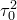
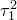
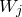
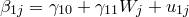
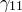
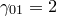
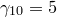
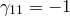

| 階層的線形モデル（HLM）について |
| 階層的線形モデル（HLM）について |
奥村太一（上越教育大学）
2012年3月3日
心理や教育に関する研究で収集されるデータは，階層的な構造を持っていることが多い。 ここで，データの階層的な構造とは，それぞれの観測値が何らかの上位の抽出単位に包含されているような状態を指す。 例えば，学級単位で小学生に学習に関する意識調査を行ったとする。 この場合，それぞれの子どもたちはいずれかの学級に所属しているから，得られるデータはその学級に含まれたものと考えることができる。 逆に，その学級が調査対象になっていなければ，そこに含まれる子どもたちのデータは決して得られないことになる。
同様に，複数の小学生に対して学習意欲の変化を3学期にわたって時系列的に調査したとしよう。 この場合，それぞれの子どもについて複数回の観測時点におけるデータが得られることになるから，これらの観測値は子どもという上位の単位に含まれたものと考えることができる。
これらはいずれも階層的構造を持っているという点では共通である。 ここでは，こうした構造を持つデータを階層的データと呼ぶことにする。 階層的データのイメージをFigure 1として表した。
![\includegraphics[scale=0.1,angle=90]{data1.png}](images/img-0001.png)
![\includegraphics[scale=0.1,angle=90]{data2.png}](images/img-0002.png)
このような階層的構造を持つデータをどのようにして分析したらよいのだろうか。 Figure2は学習意欲と学力という2つの変数の関係について学級ごとに模式的に散布図を表したものである。
![\includegraphics[scale=0.1,angle=90]{multireg.png}](images/img-0003.png)
このデータから学習意欲と学力との相関関係，特に学習意欲（ ）から学力（
）から学力（ ）を回帰式によって予測説明することを考える。 この場合，3つの学級のデータをまとめて
）を回帰式によって予測説明することを考える。 この場合，3つの学級のデータをまとめて
 |
(1) |
という単回帰式を当てはめていいだろうか。 結果からいうとこれは相当まずいやり方である。 というのも，Figure2から明らかなように，学習意欲と学力との相関関係は学級によってずいぶん異なっているからである。 実際，学級A（学習意欲が平均的に低く学力は平均的に高い）では2変数間に目立った相関関係はないのに対し，学級BやC（学習意欲は学級Aと比べて高いが学力はそれなりに低い）では学習意欲の高い子どもほど学力も高い，という正の相関関係が存在するからである。 こうした学級間の違いを考慮せず，データ全体に式（1）のような回帰式を当てはめると，Figure2の灰色の点線で示したように回帰係数が負，つまり学習意欲の高い子どもほど学力が低い傾向にある，というどの学級にも当てはまらない現象が分析結果として得られてしまう1。
こうした問題を解決するための素朴な方法の1つとして思いつくのは，学級ごとに回帰直線を当てはめればいいのではないかというものであろう。 つまり，
 |
(2) | ||
 |
(3) | ||
 |
(4) |
を考えるということである。 この方法では，データ全体に対して回帰式を当てはめることで生じる問題は回避される。 つまり，学級ごとに学習意欲と学力との関係性が異なるということは「それぞれの学級用の」回帰式における切片や傾きの違いとして表されるからである。
学級ごとに回帰式を当てはめるという発想自体はよいのであるが，この方法にもまだ問題は残る。 それは，各学級のデータを全く別個に扱っているということに起因するものである。 異なる学級といっても，互いに共通した特徴が全くないわけではない。 つまり，学級Aについて知ろうと思えば，学級Bや学級Cといった他の学級の持っている情報も何らかの役に立つはずなのである。 これは，明らかな情報の損失である。 1つの学級に含まれる子どもはせいぜい数十名であり，相関関係について確かなことを主張するためにはデータが少ないと言わざるを得ない2。 また，この例では学級がたった3つしかないが，もっと大規模な調査で対象となった学級の数が何十，何百もある場合はどうなるだろう。 それぞれの学級のデータに対して回帰分析をいちいち実行するということ自体が非常に手間であるし，各学級について得られた結果を総合して何が言えるのかということが見えづらい。
RaudenbushとBrykによる階層的線形モデル（Hierarchical Linear Models: HLM）は，まさにこうしたデータを適切に分析し有用な情報を取り出すために開発されたものである。
上記の例のようなデータを分析する際，HLMでは以下のようなモデルを考える。 まず，各学級ごとの回帰式を考える。 つまり，学級 の子ども
の子ども に対して
に対して
 |
(5) |
なるモデルを考える。 ここまでは，先ほどのように学級ごとに回帰分析を行うのと特に変わりはない。
次に，各学級の切片 と傾き
と傾き についてさらに次のようなモデルを考える。
についてさらに次のようなモデルを考える。
 |
(6) | ||
 |
(7) |
つまり，全ての学級の切片および傾きを平均したものが および
および によって表され，各学級の切片および傾きはその値からのずれ（
によって表され，各学級の切片および傾きはその値からのずれ（ および
および ）を足し合わせたものとして表現されるということである。 例えば，学級Aにおける切片と傾きはそれぞれ
）を足し合わせたものとして表現されるということである。 例えば，学級Aにおける切片と傾きはそれぞれ
 |
(8) | ||
 |
(9) |
となる。
このような2段階のモデル化を行うことで，切片や傾きについて
平均的な値
各学級の値（平均的な値+平均からのずれ）
という2種類の情報を得ることができる。 しかも，HLMでは1回の分析を実行するだけでこれらすべての情報を得ることができる。 すなわち，仮に学級が数十あるとしても，それらの切片や傾きの情報を得るのに数十回の分析を繰り返す必要はない。
HLMによる階層的データの分析では，各学級の切片および傾きそのものの値ではなく，むしろそれらの分散に興味があることが多い。 つまり，切片や傾きが学級間でどれくらい違いが存在するのか，ということである。 ここでは，切片および傾きの分散をおよびと表しておく。
すると，例えばの値が大きい場合，学級によって傾きに大きな違いがあるということになる。 上記の例では，学習意欲と学力との予測説明の関係性が学級によって異なり，傾きの急な学級もあれば傾きの緩やかな学級もある（場合によっては傾きが負の学級もあるかもしれない）ということを表す。 実際，Figure2では学級によって回帰直線の切片も傾きも様々であるから，こうした情報が分析の結果得られるのはHLMを利用することの大きなメリットである。
ただし，「学級によって学習意欲と学力の関係に大きな違いがある」といった情報だけでは，何がありがたいのかよくわからないかもしれない。 しかし，「切片や傾きが学級のどういった特性によって左右されているのか」ということがわかればどうだろう。
例えば，以下のような2つの仮説があるとしよう。
担任教師がベテラン（教師経験が長い）ほど，学級の平均的な学力は高い
担任教師がベテラン（教師経験が長い）ほど，学力と学習意欲との間の関係は小さい
HLMを用いると，こうしたやや複雑な仮説の検証を簡単に行うことができる。 方法は単純で，式(7)にその学級の担任の経験年数（と表しておく）を説明変数として加えればよい。 つまり，
 |
(10) | ||
|  | (11) |
ということになる。 少しややこしいが，落ち着いて考えると理解は難しくない。 つまり，学級の切片（つまり学習意欲がゼロのときの学力の予測値）が，担任の教師経験の長さに左右されているということ，また傾き（学習意欲と学力との関係性の程度）も同様に担任の教師経験の長さに左右されているということをモデルとして想定していることになる。
このモデルをHLMに適用して次のような結果が得られたとする。 これをどのように解釈できるだろうか。
切片 |
傾き |
||||
|
|
|
|
 |
|
30 |
2 |
1 |
5 |
-1 |
1 |
まず，[切片]の結果によると，より，担任教師の経験年数が1年長いほど，その学級の平均的な学力成績は2点高い傾向にあることがわかる。 また，[傾き]の結果のうちであるから，平均的に，学習意欲が1点高い子どもほど学力成績は5点高い傾向にあることがわかる。 ただし，その傾向は担任教師の経験年数によって異なり，具体的にはより経験年数が1年長いほど学習意欲と学力との関係は1ポイントずつ減少する傾向にある。 例えば，経験年数が5年の教師が担任する学級においては，学習意欲の高さと学力とは平均的に関係がないということになる3。
ただし，およびはゼロではないから，学力の高さや学習意欲と学力の関係における学級間の違いは，担任教師の経験年数だけで全て決まっているわけではない。
このように，階層的データにHLMを適用することにより，データの構造を考慮した適切な分析が行えるだけでなく，集団間の違いやそれを規定する要因についても様々な検討が可能となる。 すでに述べたように縦断的に収集されたデータも階層的データとみなせるから，これにHLMを適用することにより
時間に伴う個人内の変化
個人内変化の個人差とそれを規定する要因
といった非常に興味深い考察を行うことができる。
もちろん，集団に属する個人が縦断的にデータ収集の対象となる，といったよりレベルの多い階層構造を持つデータも分析することも可能である。 この場合，個人内変化の個人差だけでなく，そうした個人差がその個人の属するどのような集団の特性によって規定されているのか，といった複雑なメカニズムを記述することができる。
HLMを実行するためのソフトウェアはたくさん用意されている。 例えば，フリーの統計解析環境であるRでは，nlmeパッケージをインストールすることでHLMによる分析を実行することができる。 また，SSI(Scientific Software International)社によって提供されているそのものズバリHLMというソフトウェアは，グラフィカルユーザーインターフェースを備えた利用しやすい環境を整えている。
分析環境についての詳細は，書籍や学会で行われているワークショップの資料などを参照されたい。 以下に，参考となる文献を挙げておく。
奥村太一 (2006). 階層的線形モデルによるデータの分析例 （Web内資料：http://www.p.u-tokyo.ac.jp/ okumurin/gd_okumura.pdf）
小野寺孝義・岩田昇・菱村豊・長谷川孝治・村山航 (2006). 基礎から学ぶマルチレベルモデル ナカニシヤ出版
ピネイロ・ベイツ（緒方宏泰・訳）(2010). S-PLUSによる混合効果モデル解析 シュプリンガージャパン
Raudenbush, S. W. & Bryk, A. S. (2002). Hierarchical linear models – Applications and data analysis methods (2nd ed.). Sage
Footnotes
| 階層的線形モデル（HLM）について |